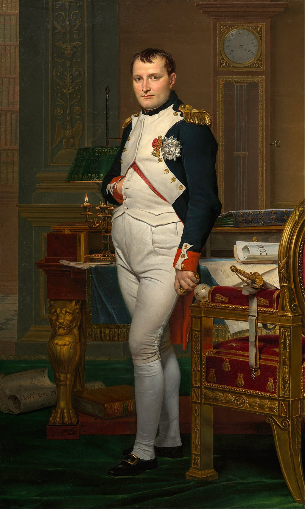

<head>
<meta charset="UTF-8" />
<meta name="keywords" content="drawing, painting" />
<meta name="description" content="drawings by Sunjy" />
<title>Sunjy</title>
<link rel="shortcut icon" type="image/x-icon" href="../../mImages/mCommon/favicon.ico" media="screen" />
<link rel="stylesheet" type="text/css" href="../../mCsses/mCommon/mCssA.css" />
<link rel="stylesheet" type="text/css" href="../../mCsses/mCommon/mCssB.css" />
<link rel="stylesheet" type="text/css" href="../../mCsses/mCommon/mCssC.css" />
<link rel="stylesheet" type="text/css" href="../../mCsses/mCommon/mCssD.css" />
<link rel="stylesheet" type="text/css" href="../../mCsses/mContent/mCssA.css" />
<link rel="stylesheet" type="text/css" href="../../mCsses/mContent/mCssB.css" />
<link rel="stylesheet" type="text/css" href="../../mCsses/mContent/mCssC.css" />
<link rel="stylesheet" type="text/css" href="../../mCsses/mContent/mCssD.css" />
</head>
<script type="text/javascript" src="../../mScripts/mContent/mContentAA.js" /></script>
<script type="text/javascript" src="../../mScripts/mContent/mContentAB.js" /></script>
<script type="text/javascript" src="../../mScripts/mContent/mContentAC.js" /></script>
<script type="text/javascript" src="../../mScripts/mContent/mContentAD.js" /></script>
<script type="text/javascript"></script> 
<script type="text/javascript">
document.write('<div class="mImgAbsolute"></div>');
/*
document.write('<p class="mFontSizeBColor" />From a white paper...</p>');
document.write('<table class="center"><tr><td>');
document.write('');
document.write('</td></tr></table>');
*/
</script>


<script type="text/javascript">
document.write('<p class="mFontSizeBColor" />The Emperor Napoleon in His Study at the Tuileries</p>');
document.write('<p class="mFontSizeSColor" />“The Emperor Napoleon in His Study at the Tuileries” by Jacques-Louis David shows Napoleon standing. This portrait is a three-quarters life-size, wearing the uniform of a colonel of the Imperial Guard Foot Grenadiers with his military decorations.<br><br>Napoleon is looking at the viewer and poses with his right hand is in his jacket. His face is reminiscent of Churchill’s early portraits of determination.<br><br>On the desk are a pen, several books, dossiers, and rolled-up papers. More rolled documents and a map are on the green carpet to the left of the desk. Napoleon is shown with unbuttoned cuffs, wrinkled stockings, disheveled hair.<br><br>The flickering candles are nearly spent, and the time on the clock is 4.13 am. These symbols are all meant to imply he has been up all night, writing laws such as the Code Napoléon. The word “Code” is prominent on the rolled papers on the desk.<br><br>This portrait focuses on Napoleon’s civic leadership and not his heroic or military reputation, though the sword on the chair’s armrest references back to his military successes.<br><br>His Napoleonic Code has influenced the legal systems of more than 70 nations around the world.<br><br>Ideas such as meritocracy, equality before the law, property rights, religious toleration, and modern secular education were all championed by Napoleon and codified in legal statutes.<br><br>Napoleon’s influence brought fundamental liberal reforms to France and the many territories that he conquered and controlled throughout Western Europe.<br><br>This portrait was a private commission from the Scottish nobleman and admirer of Napoleon. On the papers on the floor is the painter’s signature and date: LVDci DAVID OPVS 1812.<br><br>Napoléon Bonaparte<br><br>Napoléon Bonaparte[a] (1769 – 1821) was a French statesman and military leader who rose to prominence during the French Revolution and led many successful campaigns during the French Revolutionary Wars.<br><br>He was Emperor of the French as Napoleon I from 1804 until 1814 and again briefly in 1815.<br><br>Napoleon dominated European and global affairs for more than a decade. He led Franch forces against a series of coalitions in the Napoleonic Wars.<br><br>He won most of these wars and the majority of his battles, building a vast empire that ruled over much of continental Europe before its final collapse in 1815. He is considered one of the greatest military commanders in history.<br></p>');
document.write('<table class="center" /><tr><td>');
document.write('<br>Napoleon is looking at the viewer and poses with his right hand is in his jacket. His face is reminiscent of Churchill’s early portraits of determination.<br><br>On the desk are a pen, several books, dossiers, and rolled-up papers. More rolled documents and a map are on the green carpet to the left of the desk. Napoleon is shown with unbuttoned cuffs, wrinkled stockings, disheveled hair.<br><br>The flickering candles are nearly spent, and the time on the clock is 4.13 am. These symbols are all meant to imply he has been up all night, writing laws such as the Code Napoléon. The word “Code” is prominent on the rolled papers on the desk.<br><br>This portrait focuses on Napoleon’s civic leadership and not his heroic or military reputation, though the sword on the chair’s armrest references back to his military successes.<br><br>His Napoleonic Code has influenced the legal systems of more than 70 nations around the world.<br><br>Ideas such as meritocracy, equality before the law, property rights, religious toleration, and modern secular education were all championed by Napoleon and codified in legal statutes.<br><br>Napoleon’s influence brought fundamental liberal reforms to France and the many territories that he conquered and controlled throughout Western Europe.<br><br>This portrait was a private commission from the Scottish nobleman and admirer of Napoleon. On the papers on the floor is the painter’s signature and date: LVDci DAVID OPVS 1812.<br><br>Napoléon Bonaparte<br><br>Napoléon Bonaparte[a] (1769 – 1821) was a French statesman and military leader who rose to prominence during the French Revolution and led many successful campaigns during the French Revolutionary Wars.<br><br>He was Emperor of the French as Napoleon I from 1804 until 1814 and again briefly in 1815.<br><br>Napoleon dominated European and global affairs for more than a decade. He led Franch forces against a series of coalitions in the Napoleonic Wars.<br><br>He won most of these wars and the majority of his battles, building a vast empire that ruled over much of continental Europe before its final collapse in 1815. He is considered one of the greatest military commanders in history.<br>" />');
document.write('</td></tr></table>');
</script>


